无线传感器网络（WSN）MAC 协议
WSN-MAC协议概述
WSN（无线传感器网络）核心特征决定了它的 MAC 协议不能直接套用传统设计：
- 传感器节点资源受限：电池供电，计算和存储能力有限
- 高密度、大规模随机分布
- 动态、自组织：节点的网络拓扑界面动态变化
- 应用相关、以数据（任务）为中心：采集数据为主
根据上述特定，则MAC 协议的设计要抓住三个核心目标：节能；可拓展；网络效率
- 节省能量
- 能耗分析：组成模块的能耗以及无线通信模块的状态
- 冲突碰撞，串音，空闲监听，控制信息开销都会浪费能量
- 可扩展性：不管是节点数量增加（比如从 100 个加到 1000 个）、拓扑变化（节点移动 / 故障），还是流量变化（突然有大量数据要传），协议都能适应，不用重新设计。
- 网络效率：在节能的前提下，要保证数据传得又快又稳。
信道共享方式：多跳共享广播信道
“信道” 就是无线信号传输的通道，不同网络的节点共享信道的方式不一样：
传统网络采用点对点（两个节点共享无线信道），点对多点（固定基础设施控制的无线信道），多点共享（多个终端共享一个无线信道）等方式
而WSN采用多跳共享广播信道
WSN 的节点通信范围有限（比如只能传 10 米），只有 “邻居节点”（在通信范围内）能收到它的信号，覆盖范围以外的节点感知不到任何通信的存在
- 所以WSN的频率空间复用度高， 比如 A 节点在 10 米内发数据，10 米外的 B 节点可以同时发数据，互不干扰，不用抢同一个信道。
- 但是同时会导致一些问题：冲突和节点的位置有关；会出现 “局部事件”（比如某个区域的节点感知到事件）和 “全局事件”（整个网络的节点都感知到）的差异；进而引发后续的隐藏终端、暴露终端问题
隐终端和暴露终端
这是 WSN 多跳共享信道特有的两个 “坑”，直接影响通信效率：
隐终端问题（Hidden-terminal problem）
- 隐藏终端是指在接收节点的覆盖范围内而在发送节点的覆盖范围外的节点
- 节点 C 在接收节点 B 的通信范围内，但不在发送节点 A 的通信范围内 ——A 看不到 C，C 也看不到 A。
- 节点之间无法互相监听对方。但当其不可以同时传输时，其同时传输，从而导致冲突发生。
- 即A 向 B 发数据时，C 也可能向 B 发数据，两个信号在 B 那里撞车（冲突），数据都传失败，浪费能量还降低效率。
- 注意：隐终端是相对的，比如下图当C相对于B是A的隐终端，而A相对于B也是C的隐终端
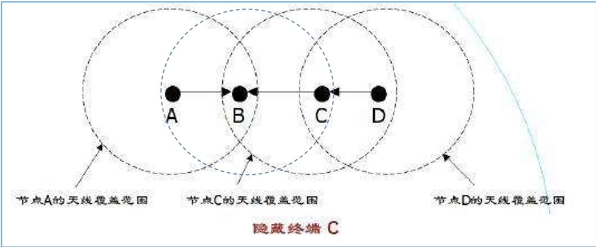
- 隐藏终端是指在接收节点的覆盖范围内而在发送节点的覆盖范围外的节点
暴露终端问题（Exposed-terminal problem）
- 暴露终端是指在发送节点的覆盖范围内而在接收节点的覆盖范围外的节点
- 节点 C 在发送节点 B 的通信范围内，但不在接收节点 A 的通信范围内 ——C 能看到 B 在发数据，以为信道忙。D就是一个暴露终端
- 节点之间能够互相监听对方。但其可以同时传输时，其不传输，从而造成浪费。
- 同上图，C 本来可以向其他节点（比如 D，不在 B 的通信范围内）发数据，但因为看到 B 在忙，就不敢发了，白白浪费了信道资源。
- 暴露终端是指在发送节点的覆盖范围内而在接收节点的覆盖范围外的节点
RTS/CTS 握手机制
为了缓解隐终端和暴露终端，设计了 “RTS/CTS 握手” 的协调机制，相当于通信前先 “打个招呼”
- 主要应对隐发送终端问题：避免 “发送节点看不到的潜在竞争者” 干扰通信，减少数据冲突和能量浪费；
- 辅助实现信道预约：通过短消息让邻居节点提前知晓 “即将有数据传输”，合理安排休眠或等待，提升信道利用率。
具体流程：
- 发送节点先发一个短控制消息 RTS（Request to Send，请求发送），告诉接收节点 “我要给你发数据了”；
- 接收节点回应一个短控制消息 CTS（Clear to Send，允许发送），告诉周围节点 “我要接收数据了，你们先别发”；
- 之后发送节点收到CTS后再发真正的数据（DATA），接收节点收到后回复确认（ACK）。
- 注意：如果A未收到CTS，A认为发生了冲突，延迟重发RTS；
周围的邻居节点听到 RTS 或 CTS 后，就知道信道被占用了，会暂时不发数据主动延迟自己的发送请求，避免和正在传输的数据冲突，能解决大部分隐终端问题
但是注意无法解决单信道时的隐接收终端问题
- 场景：C 收到 B 的 CTS 后，暂停向 B 发送数据；此时节点 D（在 C 的通信范围内、不在 B 的通信范围内）想给 C 发数据，于是向 C 发送 RTS；
- 矛盾：C 因为要避让 A 和 B 的通信，不能回复 D 的 RTS（怕干扰 B）；
- 后果：D 没收到 CTS 回应，无法判断是 “RTS 冲突”“C 没开机” 还是 “C 是隐终端”，只能反复重发 RTS，白白浪费能量，这个问题单信道下握手机制解决不了。
还有就是RTS 之间的碰撞也会导致问题
- 场景：节点 C 正在向节点 D 发送自己的 RTS（请求给 D 发数据），此时节点 A 向 B 发送 RTS，B 回应 CTS；
- 矛盾：C 因为正在发送自己的 RTS，听不到 B 的 CTS，不知道 A 和 B 即将传输数据；
- 后果：C 继续向 D 发送数据，可能和 A 向 B 发送的数据发生冲突，导致双方传输失败。
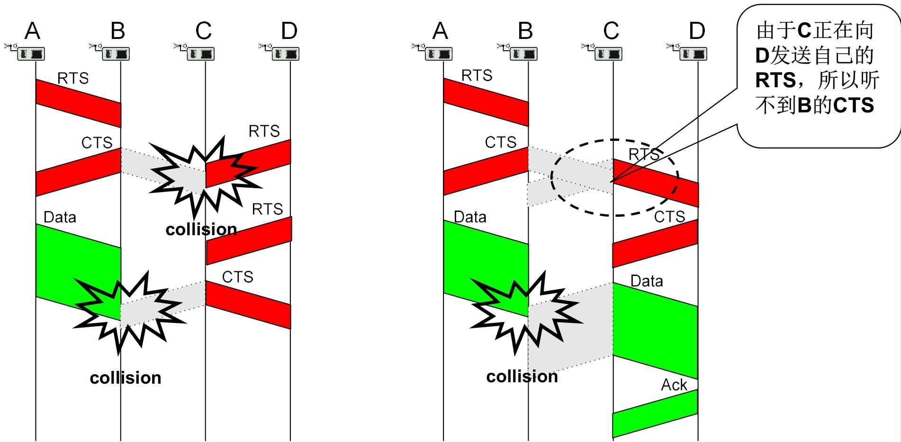
MAC协议分类
MAC 协议的分类核心是从 “信道怎么用”“用多少信道”“谁来管信道” 三个维度划分
按分配信道的方式（核心分类维度）
这个维度决定了节点 “如何获取信道使用权”，是 MAC 协议最核心的划分依据。
- 竞争型（Contention-based MAC protocol）
- 信道是 “共享资源”，节点需要发数据时，先检测信道是否空闲，空闲就发，冲突了就按规则重试（比如等随机时间再抢）。
- CSMA/CA、S-MAC、T-MAC、B-MAC、Sift。
- 分配型（Schedule-based MAC protocol）
- 提前把信道资源 “分配到户”，节点按固定 “配额” 使用 —— 比如分配固定的时间片、频率段，节点只在自己的配额内通信，不用抢，自然无冲突。
- TDMA（时分多址）、FDMA（频分多址）、CDMA（码分多址）、TRAMA、DMAC。
- 竞争型（Contention-based MAC protocol）
按使用的信道数目
- 单信道，双信道，多信道
控制类型
- 集中式（中心节点统一管理信道），控制式（节点之间通过交互信息自主协商信道使用）
IEEE 802.11 DCF
IEEE 802.11 DCF（分布式协调功能）是 WiFi 等无线局域网的基础 MAC 机制，核心是通过 “冲突避免” 解决无线信道无法检测冲突的问题，同时用 RTS/CTS 握手机制优化信道占用
为什么无线不用 CSMA/CD？
有线网络用 CSMA/CD（载波监听多路访问 / 冲突检测），发送数据时能实时检测是否冲突，一旦冲突就立即停止发送，节省能量。但无线局域网（WLAN）做不到：
- 设备同一时间只能要么发数据、要么收数据，没法同时 “发送 + 检测冲突”；
- 就算发送端显示发送正常，也可能因为信号衰减、遮挡等问题，数据根本没传到接收端，检测不到这种 “隐性失败”。
所以无线场景下，把 “冲突检测” 改成了 “冲突避免”，也就是 CSMA/CA 机制 —— 核心思路是 “发送前先确认信道空闲，忙就避让，减少冲突概率”。
CSMA/CA （载波监听多路访问 / 冲突避免）
CSMA/CA 的核心是 “先监听、再发送，忙则退避”
- 发送前监听信道：节点要发数据时，先通过两种方式判断信道是否空闲：
- 物理载波监听（CS）：直接检测无线信号的能量或质量，有信号就认为信道忙；
- 虚拟载波监听（CS）：看 MAC 报头或 RTS/CTS 报文中的 NAV 字段，NAV 值没减到 0，就认为信道还被占用。
- 只要两种监听中有一个显示 “忙”，就不发送数据。
- 信道状态处理
- 若信道空闲：等待 DIFS（分布式协调帧隙）时间后，直接发送数据；
- 若信道忙：先等信道空闲，再等待一段 “随机退避时间”，之后再监听信道，空闲就发送。
- 关键：每个节点的退避时间不一样，能大幅减少多个节点同时抢信道的冲突。
其中通过帧间间隔（IFS）实现优先级控制：
- SIFS（短帧隙）：优先级最高（比如 10μs/802.11b），用于需要立即响应的控制帧，比如 ACK、CTS，不用等退避，直接发送；
- DIFS（分布式协调帧隙）：优先级中等（比如 50μs/802.11b），用于发送数据帧和普通管理帧，必须等 DIFS 时间后，确认信道空闲才能发送；
- PIFS（点协调帧隙）：优先级介于 SIFS 和 DIFS 之间（比如 30μs/802.11b），用于 PCF（点协调功能）模式，能优先抢占信道。
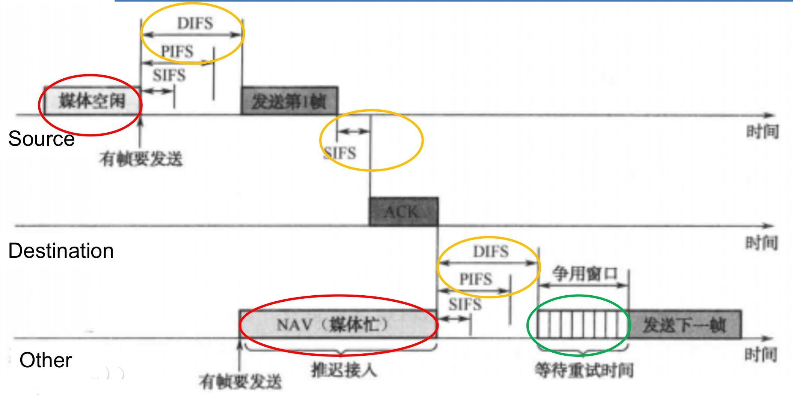
RTS/CTS 握手机制（信道预留）
CSMA/CA 的优化补充，用来解决 “隐终端” 问题，同时明确信道占用时长，流程像 “打电话前先问对方是否方便”：
- RTS（请求发送）：发送节点先发一个短控制消息，告诉接收节点 “我要给你发数据，预计占用信道多久”；
- CTS（允许发送）：接收节点收到 RTS 后，立即回一个短控制消息，告诉周围所有节点 “信道忙”；
- 数据传输 + ACK 确认：发送节点收到 CTS 后，才开始发真正的数据；接收节点收到数据后，回复 ACK（确认消息），告诉发送节点 “数据收到了”。
[!tip]
- 发送节点：等 DIFS 时间→发 RTS；
- 接收节点：收到 RTS 后，等 SIFS 时间→发 CTS；
- 发送节点：收到 CTS 后，等 SIFS 时间→发数据；
- 接收节点：收到数据后，等 SIFS 时间→发 ACK；
- 其他节点：听到 RTS/CTS 后，根据 NAV 值避让，等 NAV 倒计时结束后，再等 DIFS 时间 + 随机退避时间，才能竞争信道。
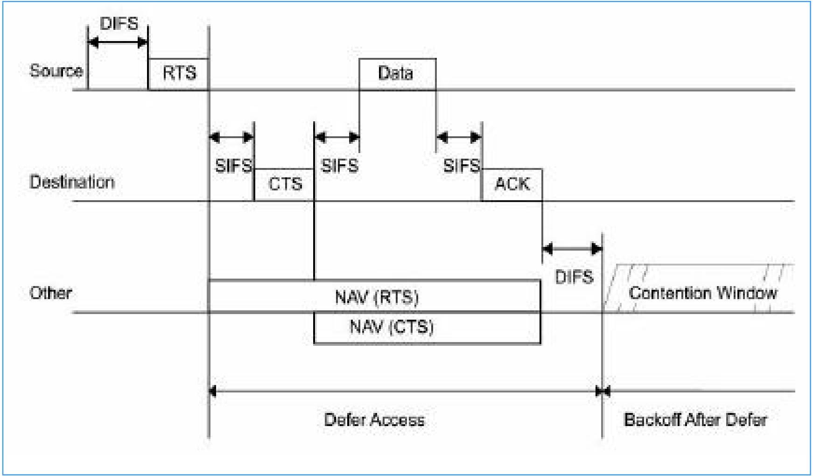
随机退避算法 —— 减少同时抢信道的冲突
当多个节点都检测到信道忙，等信道空闲后，不会同时发送，而是通过 “随机退避” 决定发送顺序：
- 退避时间计算：退避时间 = 随机数（Random ()）× 时隙时间（aSlottime）；
- 随机数（Random ()）：从 [0, CW] 区间里选一个均匀分布的整数，CW 是 “竞争窗口”；
- 时隙时间（aSlottime）：固定值（比如 20μs/802.11b），包含发射启动、信号传播、检测响应的时间；
- CW 的动态调整：类似于计网中TCP的拥塞控制
- 第一次发送时，CW 用最小竞争窗（CWmin），比如 802.11b 的 CWmin=31；
- 如果发送后没收到 ACK（说明冲突或传输失败），CW 就加倍（比如 31→62→124…），直到达到最大竞争窗（CWmax）；
- 冲突越多，退避时间的随机性越大，越能减少再次冲突的概率。
- 退避过程：多个节点同时进入退避时，退避时间最短的节点会最先竞争到信道，直接发送数据。
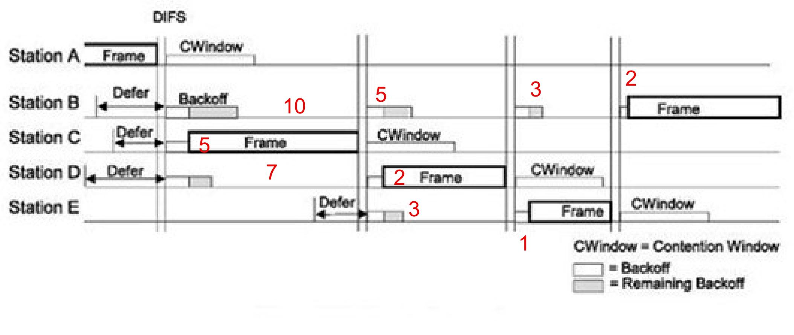
S-MAC 协议
S-MAC 是专为无线传感器网络（WSN）设计的竞争型 MAC 协议，核心是在 WSN 资源受限的场景下，平衡节能与网络可用性
S-MAC 的设计基于 3 个关键场景假设，所有机制都围绕这些前提展开：
- 单信道通信：所有传感器节点共用一个无线信道
- 平均数据率很低：不需要高频次传输数据，数据发送间隔较长；
- 可容忍一定通信延迟：优先保证节点低功耗运行，允许数据传输有一定延迟
S-MAC 的设计目标优先级为 “节能＞扩展性”：最大化节点空闲（Idle）时间，减少能量浪费 —— 重点规避冲突、串音、空闲监听、控制消息开销这四类能耗源头；
S-MAC 的核心思想：
- 周期性休眠 / 侦听：节点按固定周期交替 “唤醒（侦听 / 收发数据）” 和 “休眠（关闭射频）”，从根源降低idle时间，减少空闲监听能耗
- 邻居节点休眠机制：当某两个节点正在收发数据时，无关的邻居节点主动进入休眠，既避免了串音（听无关数据），又减少了冲突（抢信道），双重节能；
- 消息传递机制：针对长消息重传代价高、短消息控制开销大的问题，优化数据传输方式，减少控制消息带来的能耗；
- 自适应侦听机制：缓解周期性休眠导致的延迟累加问题，在不增加太多能耗的前提下，让数据能更快地在多跳网络中传输。
周期性侦听和睡眠
周期性侦听和睡眠：本质是让传感器节点 “按时间表上下班”—— 定时唤醒处理通信、其余时间休眠省电；即周期性唤醒
- 每个节点都有一套固定的 “通信时间表”，核心由 3 个时段和 1 个关键参数构成：
- 唤醒周期（Wakeup Period，也称调度周期 Tw）：整个作息（侦听时段+睡眠时段）的循环时长，比如 “100 秒一个周期”，是节点作息的 “总时长”；
- 侦听时段（Active Period，也称活跃时段 Ta）：周期内节点唤醒的时间，比如 “100 秒周期中唤醒 10 秒”，这段时间节点可收发数据、交换同步信息，相当于 “工作时间”；
- 睡眠时段（Sleep Period）：周期内节点休眠的时间，即 “Tw - Ta”（比如 100 秒 - 10 秒 = 90 秒），这段时间节点关闭射频模块，完全不处理通信，相当于 “休息时间”；
- 占空比（Duty Cycle）：核心参数，公式是 “占空比 = Ta/Tw”，直白说就是 “节点每个周期的工作时间占比”（比如 10 秒 / 100 秒 = 10%），直接决定节能效果和通信效率。
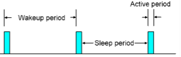
占空比
占空比没有 “绝对最优值”，选大或选小要根据场景权衡，核心是 “节能” 和 “通信效率” 的取舍
- 小占空比（比如 Ta=1 秒，Tw=100 秒，占空比 1%）
- 优点：节点 99% 的时间都在休眠，能最大程度避免 “没事却一直监听信道” 的空闲能耗，超级省电，延长节点生命周期；
- 缺点：所有邻居节点的通信都要挤在 1 秒的活跃时段，容易引发信道竞争和冲突；多跳场景下，每跳都要等节点唤醒，等待时间会累积，导致端到端延迟变大（比如 10 跳每跳等 100 秒，总延迟就达 1000 秒）。
- 大占空比（比如 Ta=30 秒，Tw=100 秒，占空比 30%）
- 优点：活跃时间长，通信不用扎堆，冲突少；多跳传输时不用长时间等待，延迟小，通信效率高；
- 缺点：休眠时间短，节点空闲监听的能耗增加，电池消耗更快，节能效果打折扣。
调度同步：邻居节点 “作息对齐” 才能通信
节点不能各自按自己的时间表来，否则 “你工作时我休眠”，数据根本传不了，所以必须实现 “邻居作息同步”：
分别有节点启动时的同步流程和工作中的同步维护
节点启动时的同步流程
- 主要是侦听是否存在邻居节点的同步帧 “同步广播（SYNC 帧）”，优先 “抄邻居的作息”，没邻居就 “自己定作息”
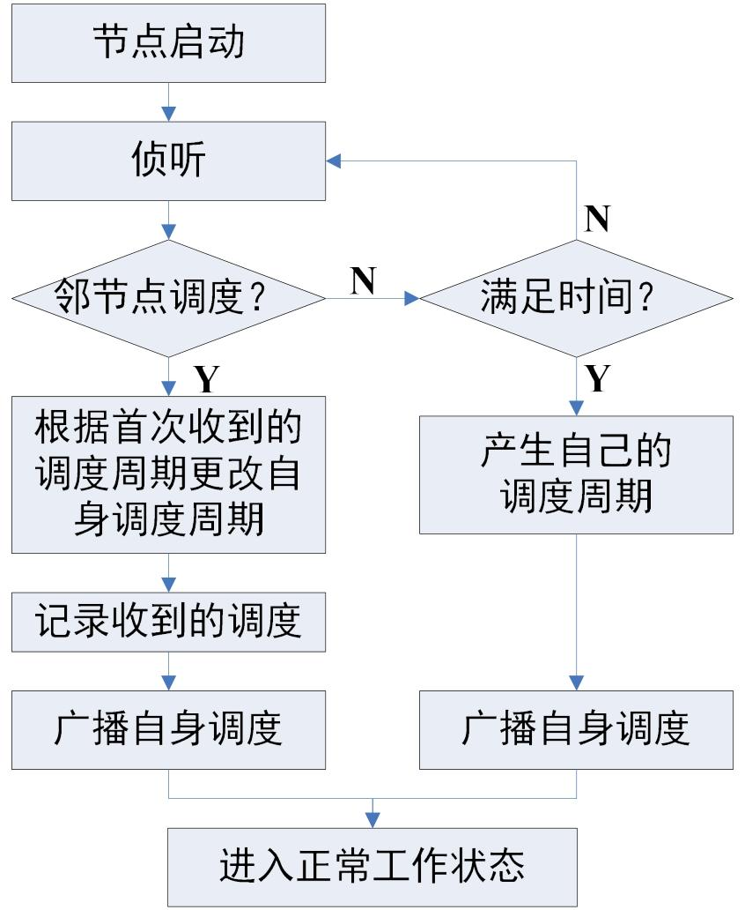
例如：A 启动时没有邻居，后来 B 加入，流程如下：
A 启动后侦听，没收到 SYNC→自己定作息，广播 “ASYNC”；
B 加入，广播自己的作息 “BSYNC”；
因为 A 没有其他邻居，所以直接采纳 B 的 “BSYNC”，和 B 同步作息
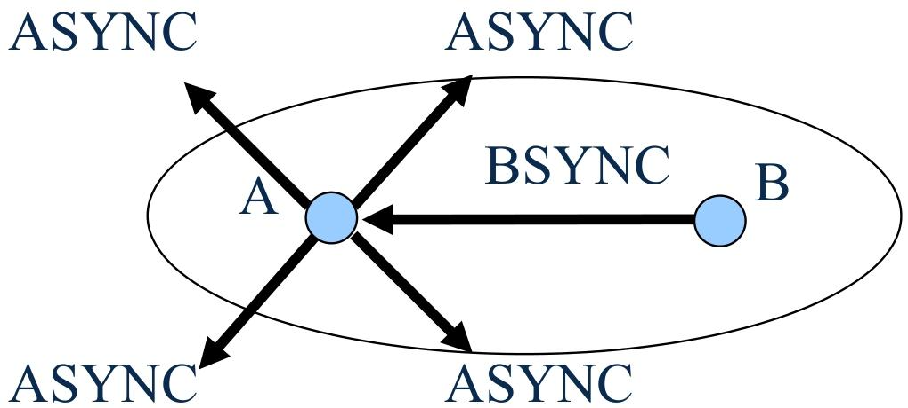
工作中的同步维护
工作中遇到新调度，优先保持原作息，仅记录新调度（避免频繁改作息）。
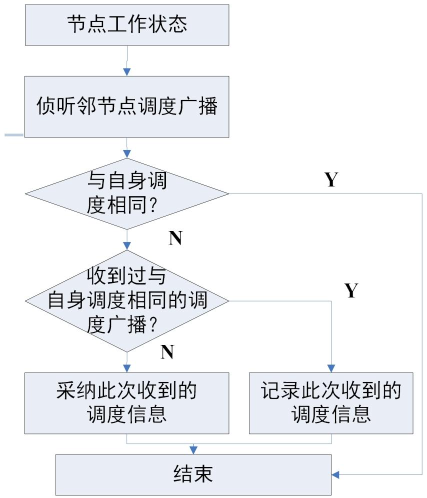
其中工作中的维护例如：A 启动时已有邻居（N），后来 B 加入，流程如下：
- A 启动后侦听，没收到 SYNC→自己定作息 “ASYNC”，和邻居 N 同步；
- B 加入，广播自己的作息 “BSYNC”；
- 因为 A 已有邻居，所以同时记录 “ASYNC” 和 “BSYNC”，既和原邻居 N 通信，也能和 B 通信。
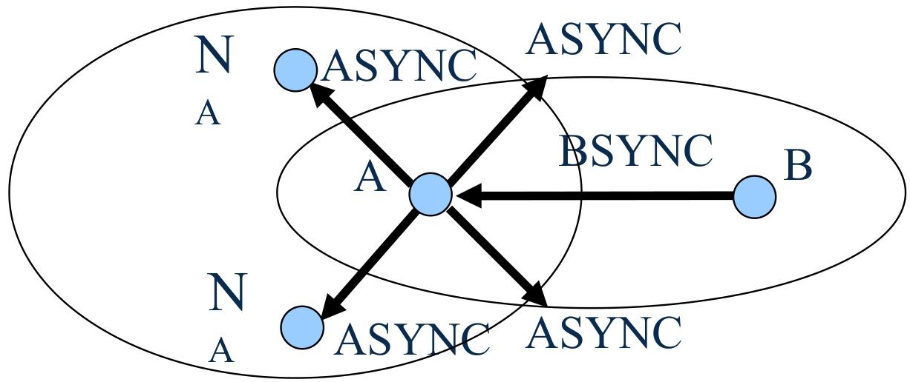
相邻节点同步后，会形成 “虚拟簇”（也称 “时间表同步的岛屿”），簇内所有节点作息完全相同，通信顺畅；
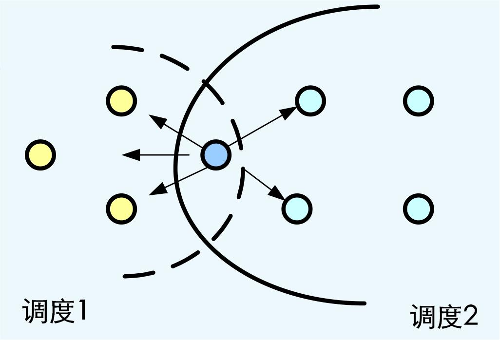
- 同一个簇内的所有节点，作息（调度周期、活跃 / 睡眠时段）完全一致；
- 不同簇的作息可能不同，但簇内通信是顺畅的（因为作息同步）。
但是如果一个节点同时属于两个或多个簇（比如节点 G 既在簇 1 的通信范围内，又在簇 2 的通信范围内），它就是边界节点：
- 需要记录多个调度：既要记住簇 1 的作息，也要记住簇 2 的作息；
- 睡眠时间更短：为了能和不同簇的节点通信，边界节点的活跃时段会覆盖多个簇的作息，相当于 “要同时上多个班”，所以睡眠时段被压缩，能耗会比普通节点高一些。
时间同步的维护：解决 “时钟漂移” 问题
节点的内置时钟会有 “漂移”（比如 A 的时钟每天快 2 秒，B 的每天慢 1 秒），时间久了作息就会不同步，S-MAC 用 “相对时间戳” 解决：
- 发送节点记录 Ts：发送完数据包后，记录自己 “从发完包到进入睡眠还需要等多久”（比如等 5 秒，记为
Ts=5）； - 接收节点记录 Tr：接收这个数据包时，记录自己 “接收包用了多久”（比如用了 2 秒，记为
Tr=2）； - 接收节点调整时钟：用
Ts - Tr（5-2=3 秒）调整自己的时钟，确保和发送节点的作息对齐； - 辅助保障：定期全周期监听：节点会定期 “全周期不睡觉”，专门接收邻居的 SYNC 帧，进一步修正时钟偏差。
侦听时段的细分：同步和通信 “分工”
节点的活跃时段（Listen period）会分成两段，避免混乱：
- 同步时段：专门交换 SYNC 帧，确认邻居的作息是否有变化，保持调度同步；
- 控制时段：处理实际数据传输，节点要发数据前，必须先用 CSMA 机制侦听信道（看看有没有其他节点在用），避免冲突。
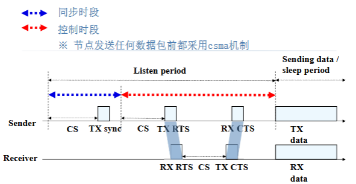
邻居节点休眠机制
串音：节点会收到和自己无关的其他节点的通信数据
所以信道忙时，邻居节点主动休眠，当两个节点（比如 A 和 B）正在通信时：
- 谁休眠？：A 和 B 的所有直接邻居（比如 A 旁边的 C、B 旁边的 D）；
- 通过 RTS/CTS 报文中的NAV 字段（信道占用倒计时）决定休眠时间 —— 邻居节点看到 NAV 值，就知道 “信道还要忙多久”，这段时间直接休眠，不用监听。
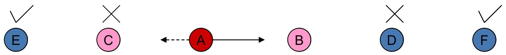
消息传递机制
消息(Message)：是具有密切的内部联系的数据的集合，只有得到完整的数据才可以在网络内部进行数据处理、聚合
其中消息又分为长消息（重传代价大）和短消息（传输代价大）
所以“一次预约，分段传输”：把长消息拆成多个短数据段（DATA），流程是：
- 发1 次 RTS/CTS：预约整个长消息的信道占用时间；
- 逐个发数据段：每个 DATA 都带 ACK 确认（确保传输成功）；
- 重传只重传失败段：某一个 DATA 没收到 ACK，只重传这一段，不用重新预约信道。
以此降低重传代价和减少竞争延迟
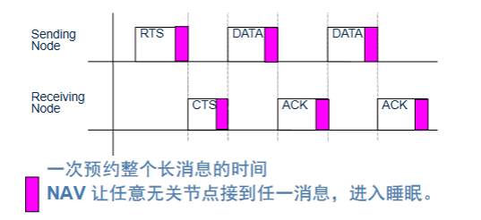
流量自适应侦听（AL）
周期性休眠会导致多跳延迟累加：比如 A→B→C 的传输，B 收到 A 的数据后，C 可能在休眠，B 得等 C 下一个活跃时段才能传，延迟变大。
解决办法：通信结束后，邻居节点额外唤醒
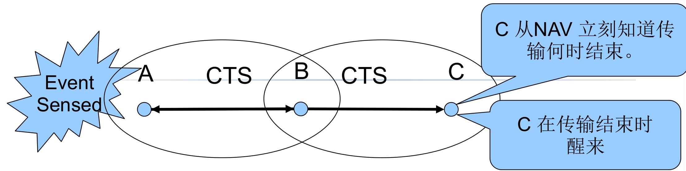
当 A 和 B 通信结束时：
- B 的邻居（比如 C）会通过 NAV 知道 “传输何时结束”；
- 传输结束后，C额外唤醒一段时间（自适应侦听窗口）；
- 若 B 有数据传给 C，可直接发 RTS，C 不用等下一个活跃时段，直接接收。
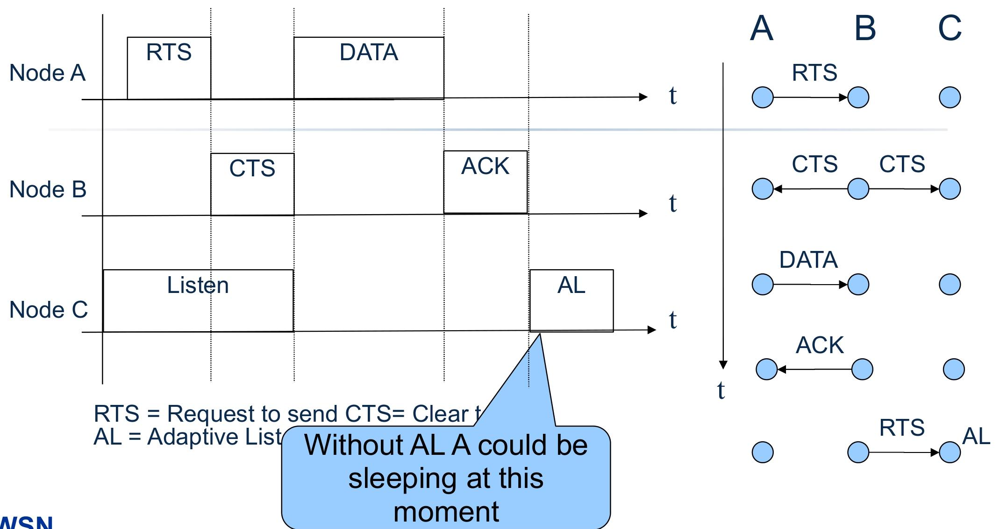
但是S-MAC协议也有其缺点：
- 调度周期固定：低流量时，活跃时段还是按高负载设计，会浪费能量；
- 边界节点能耗快：要适配多个簇的作息，睡眠少；
- 延迟优化有限：仅减少 1 跳延迟，多跳场景延迟仍大。
针对上述问题的相对应的改进协议
- T-MAC：解决 “固定活跃时间” 问题，动态调整活跃时长；
- B-MAC：解决 “严格同步” 问题，采用异步通信（不用同步作息）；
- Sift：解决 “事件响应慢” 问题，适配灾害报警等事件驱动场景。
分配型 MAC 协议
分配型 MAC 协议是为解决竞争型协议 “冲突浪费” 问题而生的 WSN 关键技术，核心是 “提前划分信道资源 + 按需分配”，从根源避免冲突
竞争型协议（如 S-MAC、CSMA/CA）的最大痛点是冲突：
- 多个节点同时抢信道，信号碰撞导致数据重传，既浪费节点能量（重传耗电），又降低带宽利用率（信道被无效数据占用）；
- 还会产生串音（接收无关数据）、空闲监听（无数据时仍监听信道）等额外能耗。
分配型协议的解决方案很直接：
- 把无线信道拆分成多个 “子信道”（按时隙、频率、编码等维度）；
- 用 “调度表” 把这些子信道静态或动态分配给节点；
- 节点只在自己分配到的子信道上通信，彻底避免冲突，同时减少串音和空闲监听。
简单说：竞争型是 “先抢后用”，分配型是 “先分后用”，适配对冲突敏感、需节能的 WSN 场景。
分配型协议的核心是 “如何拆分信道”，主流有三种方式，适配不同场景：
FDMA（频分多址）：按 “频率” 划分
- 把整个可用频段分成多个独立的子频段，每个节点独占一个子频段，只能在自己的频段内发送数据。
- 就像多个电台用不同频率广播，听众调对频率就能收到，互不干扰。
TDMA（时分多址）：按 “时间” 划分
- 把时间轴分成固定长度的 “时间帧”（也称超帧），每个时间帧再拆成多个 “时隙”（比如 1 个超帧 = 10 个时隙）；每个节点分配到固定的时隙，只能在自己的时隙内收发数据，其他时间休眠。
- 就像会议室排发言表，每个人分配固定时间段，到点发言，其他人等待，不会抢话。
CDMA（码分多址）：按 “编码” 划分
- 所有节点共用同一个频段，但每个节点有专属的 “编码”；发送数据时，节点用自己的编码调制信号，接收节点只有用相同的编码才能解调数据，相当于 “专属密码”。
- 就像多人在同一房间用不同语言聊天，只有懂对应语言的人才能听懂，互不干扰。
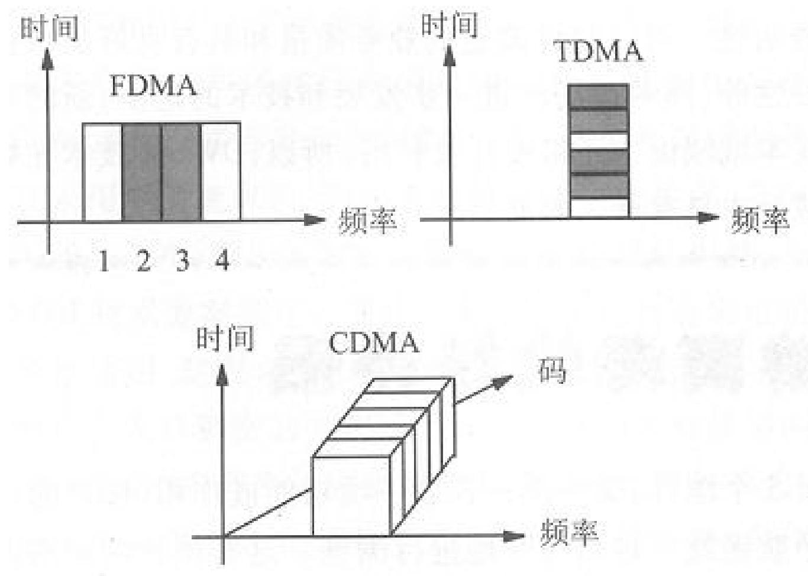
基于 TDMA 的 MAC 协议
基于 TDMA 的 MAC 协议是分配型协议的核心分支，核心逻辑是 “按时间划分时隙，节点独占时隙通信”
- 超帧（时间帧）：时间轴被划分为固定长度的 “超帧”，每个超帧包含固定数量的 “时隙”（比如 1 个超帧 = 8 个时隙），超帧循环重复；
- 时隙独占：每个节点被分配 1 个或多个专属时隙，只能在自己的时隙内收发数据，其他时隙完全休眠（关闭射频节能）；
要让 TDMA 正常工作，必须解决 4 个核心问题：
- 超帧格式：确定超帧长度、时隙数量（比如根据数据传输量，设置 10 个时隙 / 超帧）；
- 时隙时长：每个时隙的长度要足够容纳 1 个数据帧 + ACK 帧，避免数据传输超时；
- 时隙分配：按调度表将时隙分配给节点，分两种调度方式；
- 时间同步：所有节点的时钟必须严格对齐（误差小于时隙时长的 10%），否则时隙重叠会导致冲突。
两种时隙调度表设计
| 调度表类型 | 核心逻辑 | 特点 | 适用场景 |
|---|---|---|---|
| 全局调度表 | 由中心节点（如 Sink）统一分配所有节点的时隙，确保全局无冲突 | 调度简单、无冲突，但中心节点故障会导致网络瘫痪 | 一跳共享网络（节点都在中心节点通信范围内） |
| 分布式调度表 | 节点自主协商时隙分配，仅保证 “两跳内邻居不同时发送” | 无中心节点、可扩展性好，但协商逻辑复杂 | 多跳共享网络（节点需通过中继转发数据） |
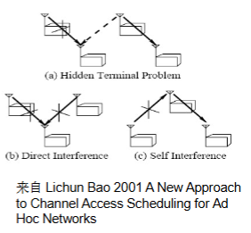
TRAMA（流量自适应 TDMA）
TRAMA 是基于 TDMA 的动态分配协议，解决了传统 TDMA“时隙固定分配、不适应流量变化” 的问题，核心是 “按流量动态调整时隙，空闲时隙可释放”。
本质是将物理信道划分为多个时隙，每个时隙的无冲突发送者由 “两跳内邻居信息” 决定；
- 时间帧交替分为两个时段，各司其职：
- 随机接入时段：节点交换邻居信息、同步时钟，维护网络拓扑（不传输业务数据）；
- 分配接入时段：根据流量动态分配时隙，节点在专属时隙内发送数据，无数据则放弃时隙。
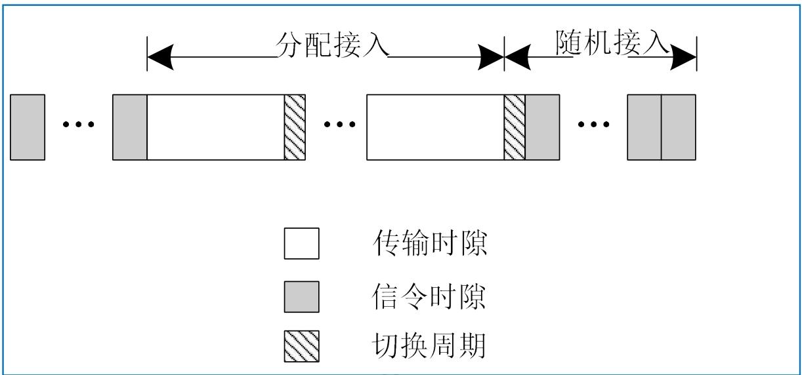
同时依赖三大算法或者协议实现动态时隙分配：NP协议维护邻居信息，SEP协议生成流量自适应调度表，AEA算法动态决定节点状态（发送 / 接收 / 休眠）
Neighbor Protocol (NP协议)
NP 协议的核心作用是让每个节点都能实时掌握 “谁是我的邻居”“邻居的邻居是谁”，相当于给节点建一张动态更新的 “网络通讯录”
- 交换邻居更新信息：让节点知道周围哪些节点是活跃的（可通信的）；
- 同步时钟信息：为 TDMA 时隙分配提供时间基准，避免时钟漂移导致冲突。
NP 协议只在随机接入时段工作，在这个阶段中所有节点都处于活跃状态，专门用于交换控制信息
具体实现逻辑：
- 周期性发送控制信息，一是自己的 “一跳邻居列表”（当前能直接通信的节点），二是时钟同步信息（确保所有节点时间对齐）
- 邻居状态判断：节点会持续监听邻居的控制信息广播，超过时间没收到更新，就判定该邻居 “失效”
- 重传机制：如果节点没收到邻居的确认（或判断信息可能丢失），会在后续的随机接入时段重新广播控制信息
- 维护两跳邻居表：每个节点最终会生成并维护一张 “两跳邻居表”（包括一跳邻居）
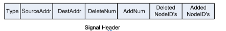
Schedule Exchange Protocol（SEP 协议）
SEP 协议是 TRAMA 协议的核心调度技术，本质是 “基于流量的动态时隙分配机制”，负责生成和同步调度表，让节点知道 “哪个时隙该自己用”
建立并维护流量自适应的调度表—— 节点有数据时优先占用时隙，无数据时释放时隙，避免传统 TDMA 时隙浪费的问题，同时通过广播同步调度信息，让全网节点达成 “时隙使用共识”。
确定调度间隔：
Schedule_Interval（调度间隔），即一次分配接入时段包含的时隙数计算 “赢时隙”：在
[t, t+Schedule_Interval]的时隙范围内，节点基于 “两跳邻居信息”（由 NP 协议提供），计算每个时隙的优先级，选出自己在两跳内优先级最高的时隙 —— 这就是 “赢时隙”，节点在该时隙中发送数据无冲突[!important]
优先级计算公式：
Priority(u,t) = hash(u ⊕ t)，其中u是节点唯一编号，t是时隙编号；通过哈希函数生成，确保每个节点在不同时隙的优先级随机且唯一；
时隙占用决策：有数据则保留，无数据则放弃“赢时隙”
调度信息广播：节点将自己的时隙分配结果（哪些时隙保留、哪些放弃、接收者是谁）封装到 “调度分组（schedule package）” 中；按固定周期广播调度分组，邻居节点接收后，更新自己的调度表，明确 “哪个节点在哪个时隙使用信道”，避免冲突。
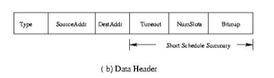
- 格式包含
SourceAddr（发送节点 ID）、Timeout（调度有效时间）、Bitmaps（时隙状态位图，标记保留 / 放弃）等字段；
- 格式包含
由于调度分组可能因信道干扰丢失，导致邻居节点调度不同步；
在发送业务数据的分组中，携带 “调度摘要”（核心调度信息），即使调度分组丢失，邻居也能通过数据分组获取调度信息，确保同步一致性。
自适应选举算法（AEA）
AEA 的核心作用是实时判定节点状态，让有数据的节点按优先级占用时隙，无数据的节点休眠节能，在某一时隙“t”上：
- 节点具有两跳邻居内最高优先级并且有数据需要发送，则进入发送状态。确保两跳内仅一个节点发送数据，彻底避免冲突；
- 让指定接收节点保持接收状态，不遗漏数据；
- 其余节点休眠，最大化节能效果。
每个时隙的状态判定流程
- 节点先基于 NP 协议的两跳邻居表，和 SEP 协议的优先级数据，算出 tx (u)、atx (u)、ntx (u) 三个核心角色
- 按 “绝对胜者→相对胜者→急需胜者→休眠” 的顺序判断，优先级从高到低
- “指定接收方”→进入接收状态
节点仅知道两跳内信息，可能出现 “认知偏差”—— 比如 A 不知道两跳外的 D 优先级更高，误以为自己是最高优先级
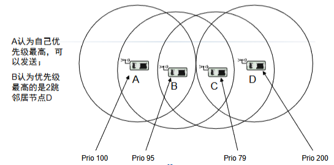
[!tip]
TRAMA 是 “为节能和无冲突牺牲了复杂度与延迟” 的协议，是静态 / 半静态、周期性传输 WSN 场景的适配方案，但不适合动态拓扑、高实时性的场景
DMAC 协议
DMAC 是专为 数据采集树型 WSN（节点向 Sink 单向传数据） 设计的时分复用 MAC 协议，核心解决传统协议（如 S-MAC/T-MAC）的 “数据转发中断” 问题
“数据转发中断（DFI）”：S-MAC/T-MAC 的周期性休眠机制存在缺陷：
- 通信范围外的节点会在活跃期后休眠，导致多跳传输中断，产生中断数据转发
- 每个唤醒周期最多转发 2 跳，多跳场景下延迟累积严重。
DMAC 仅适用于以下固定场景：
- 拓扑为数据采集树（节点分层，数据向 Sink 单向传输）；
- 节点静态、路由稳定；
- 节点时钟严格同步。
- 交错唤醒机制：解决转发中断
- 多跳路径上的节点依次交错唤醒，形成 “接收→发送→睡眠” 的链式节奏，保证数据持续传输。
- 下层节点的唤醒时间比上层节点提前 1 个时段（u）
- 用 “ACK + 重传” 保障可靠性，省去 RTS/CTS 降低控制开销；
- 同层节点通过 “固定退避 / 随机退避 / 短周期” 避免碰撞。
- 自适应占空比：适配多数据包传输
- 节点需连续发送多个数据包时，固定占空比会导致传输中断。因此在数据帧 / ACK 帧中加入 “more data flag” 标记
- 标记为 “1”：表示 “还有数据要发 / 准备好接收”；
- 连续发送的节点在睡眠 3u 后唤醒，避免冲突。
- 节点需连续发送多个数据包时，固定占空比会导致传输中断。因此在数据帧 / ACK 帧中加入 “more data flag” 标记
- 数据预测机制：解决父节点早睡（兄弟干扰）
- 上层节点（父节点）子节点多，竞争失败的子节点会延迟发送。
- 节点接收到数据后，预测子节点仍有数据，在发送周期结束后休眠 3u，重新切换为接收状态，等待子节点发送。
- MTS 帧机制：解决跨父节点干扰
- 不同父节点的节点（如 M 和 N）通信范围重叠，N 竞争胜出会导致 M 及其父节点 F 无传输时段，数据预测机制失效。
- 引入MTS（More To Send）帧：包含目的地址和MTS标志位
- MTS 请求（标志位 1）：节点因信道忙未发送数据，或收到子节点的 MTS 请求时，向父节点发送请求；
- MTS 清除（标志位 0）：节点缓冲区为空且收到所有子节点的清除帧后，向发送过“MTS请求”帧，但没有 发送过“MTS清除”帧的父节点发送清除，恢复原占空比；
- 发送 / 接收 MTS 请求的节点每隔 3u 唤醒一次，保障数据传输。
拓展
针对S-MAC存在的问题进行改进的协议
- T-MAC：解决 “固定活跃时间” 问题，动态调整活跃时长；
- B-MAC：解决 “严格同步” 问题，采用异步通信（不用同步作息）；
- Sift：解决 “事件响应慢” 问题，适配灾害报警等事件驱动场景。
T-MAC 协议
为了优化 S-MAC 的固定活跃时间缺陷，在低流量场景下减少空闲监听能耗。
T-MAC 的核心改进思路：动态调整活跃时间长度—— 在活跃时段内，若持续 TA 时间无激活事件，则提前进入睡眠。
节点处于侦听（活跃）状态，直到满足以下条件之一：
- 调度周期定时器溢出；
- 持续 TA 时间内无激活事件（激活事件包括：收到数据、感知到通信、侦听到 RTS-CTS 帧）。
此时节点会提前进入睡眠状态，减少空闲监听能耗
TA 是 “最短空闲侦听时间”，需满足约束：TA > C + R + T，C为信道竞争时间，R为发送RTS时间，T为状态切换时间
实际取值通常为：TA=1.5×(C+R+T)
通过未来请求发送（FRTS）帧解决早睡问题：发送节点转发节点发送FRTS 帧，提前唤醒下一跳节点和目的节点：
为避免节点缓冲区已满时丢失数据，T-MAC 增加规则：若节点缓冲区已满，优先发送自身缓存的数据，再接收其他节点的数据；
[!tip]
T-MAC 是S-MAC 的低流量优化版本，通过 “动态活跃时间 + FRTS 机制”，在流量波动较大、对节能敏感的 WSN 场景（如环境监测）中，平衡了节能与传输效率，但额外开销使其不适用于高流量场景。
B-MAC（Berkeley MAC）协议
B-MAC 的节能与通信逻辑均基于 “异步休眠 - 唤醒” 设计，最小化空闲监听（idle listening）能耗
- 低功耗侦听（LPL)
- 无需像 S-MAC 那样严格同步邻居作息，节点可自主设定休眠 - 唤醒间隔
- 节点按自定义的 “检查间隔（Check Interval）” 周期性醒来，检查前导码作为发送请求的信号
- 发送者使用一个很长的前导码来提醒接收者，接收者没有检测到前导码立即休眠
- 自适应前导侦听
- 发送者在传输数据前，先发送一段 “足够长的前导码”（长度需覆盖接收者的最大休眠间隔）确保接收到
- 接收者周期性唤醒检测到前导码后，会停止休眠，保持接收状态直到数据传输完成（或超时）
- 前导码长度可根据网络拓扑（如节点休眠间隔、通信距离）动态调整
- 信道空闲检测（CCA）
- 发送前先检测信道是否空闲，发现空闲再发出前导码
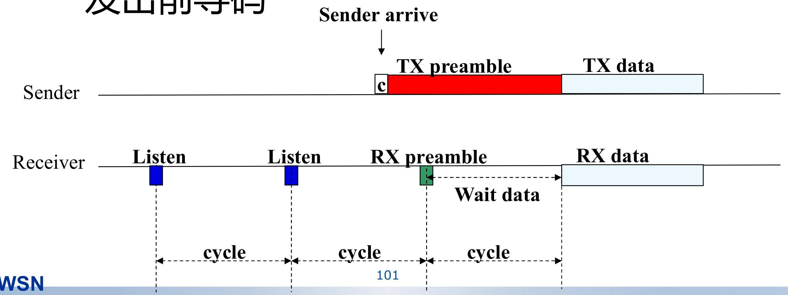
Sift 协议
解决事件驱动型无线传感器网络（WSN）的实时响应问题，即“感知突发事件并快速上报”，而非周期性传输数据
Sift 协议的核心是非均匀概率时隙选择：
采用固定长度的竞争窗口 CW（无需动态调整窗口大小，简化逻辑）；
节点在竞争窗口的不同时隙（r=1,2,...,CW）选择发送数据的概率呈几何递增
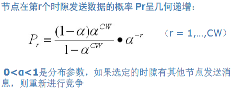
让早期时隙优先 “筛选” 少量节点发送，后期时隙通过高概率确保剩余节点快速竞争，减少冲突次数，缩短事件上报总时间。